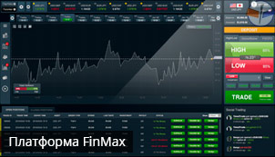
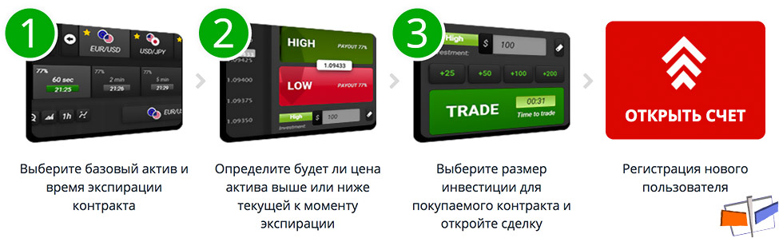

Меню
Меню Брокеры
Брокеры Стратегии
СтратегииFinmax
 |
|
| Мин. депозит: 10$ | Активы брокера: 80+ |
| Мин. ставка: 1$ | Валюта счета: USD, GBP, JPY, EUR, RUB |
| Прибыльность: До 90% | Демо счет: Нет |
| Бонус: 6 видов бонусов | |
| Пополенение счета: Кредитные/дебетовые карты, банковский перевод, Qiwi, yandexmoney, Webmoney и др. | |
| Вывод со счета: Кредитные/дебетовые карты, банковский перевод, Qiwi, Skrill (MoneyBookers), Neteller, CashU, MoneyGram, Sofort, Moneta.ru, Webmoney и др. | |
Брокерская компания Finmax открылась в 2014 году, предлагая своим клиентам обширный спектр профессиональных финансовых услуг в работе с разнообразными видами активов. Передовая торговая платформа предоставляет трейдерам обширный инструментарий и комфортный сервис по проведению различных сделок.
Отличительные особенности брокера Finmax
Данный брокер предлагает инвесторам широкие возможности для торговли бинарными опционами:
- уровень выплат до 90%;
- минимальный депозитный счет в 100$;
- минимальная сумма сделки 5$;
- мгновенное исполнение ордеров;
- время экспирации от 30 и 60 секунд, а также 2 или 5 минут и до 6 месяцев;
- отсутствие спрэда;
- Широкий спектр персональных счетов (Демо, Bronze, Silver, а также Gold, Platinum или Islamic) с различными условиями обслуживания;
- есть возможность бесплатного открытия и работы с демонстрационным счетом;
- работа с разными видами опционов Above/Below, Long term и Short Term, а также High/Low;
- гарантированный вывод в течение 48 часов заработанных средств на любые удобные сервисы;
- открытие депозитных счетов в разных видах валют;
- более 70 различных видов активов для проведения торговых операций;
- возможность пополнения счета через дебетовые и кредитные карты, Qiwi, Neteller, Webmoney, СМС, Skrill, Yandex.Деньги, Wire Transfer и пр.
Finmax предлагает инвесторам качественный сервис. Здесь можно воспользоваться разнообразной аналитической информацией, удобным экономическим календарем. В учебном центре каждый может получить необходимые знания для работы с различными видами активов. Фирма предоставляет возможность проконсультироваться с персональным менеджером. Деятельность компании лицензирована российским центром ЦРОФР.

Выгодные бонусы Finmax
В компании Finmax трейдеры имеют возможность провести первую безрисковую сделку на сумму до 1000$. Даже в случае, если торговая операция будет убыточной для клиента, брокер возместит его потери за сет собственных средств. Для своих клиентов эта компания предлагает и выгодные бонусы при пополнении депозитного счета:
- за сумму до 1000$ бонусное зачисление до 25%;
- за депозит от 1 тыс.$ до 5 тыс.$ дополнительное зачисление до 50%;
- за перечисление 5-25 тыс.$ бонус в 75%;
- 100% бонус за депозит свыше 25 тыс.$;
Используя сервис брокера Finmax инвесторы смогут зарабатывать отличные деньги на бинарных опционах.
За все время существования брокера Финмакс, компания стала одной из самых надежных и ответственных структур в сфере финансовых услуг. Ей удалось завоевать множество наград в престижных международных рейтингах.
Основателями этой фирмы стала команда профессиональных трейдеров, работающих на рынке бинарных опционов. Они создали многофункциональную платформу, объединившую все лучшие наработки и прогрессивные технологии для успешной торговли с разными видами активов.
Характеристики компании FinMax
- Удобный русскоязычный интерфейс и поддержка клиентов
- Информативные торговые сигналы
- Лицензия европейского регулятора
- Комфортный мобильный вариант торгового терминала
- Возможность работы с разными активами и опционами
- Предусмотрен сервис досрочного закрытия позиций
В системе используются новейшие технологии и передовые решения. Одним из прогрессивных методов обеспечения безопасности является закрытие информации о паролях клиентов. Коды для входа в свои аккаунты знают лишь трейдеры, брокеру Финмакс они не известны. Вопросам безопасной роботы клиентов в данной компании уделяют особое внимание. Здесь гарантируется конфиденциальность персональных данных и личной информации пользователей. Разработаны специальные процедуры верификации для защиты финансовых операций.
Все, кто не знаком с возможностями площадки Финмакс, могут испытать ее обширный инструментарий в работе на бирже бинарных опционов.
Процесс создания аккаунта на платформе Финмакс
Создание аккаунта на портале Финмакс подразумевает процедуру верификации. Она нужна для дополнительной защиты персональных данных трейдеров, обеспечивая безопасный вывод заработанных денег. Площадка FinMax обеспечивает следующие финансовые условия для работы с опционами:
- нижняя граница ставок 5 USD
- размер минимального депозита 100 USD
- уровень прибыльности по сделкам достигает 90% величины ставок
При регистрации в системе нужно выбрать любой из 3 возможных видов аккаунтов:
- Demo. Стартовый тренировочный счет, доступный в течение первой недели после регистрации. Затем трейдеру необходимо открыть один из следующих вариантов счетов.
- Real. Данный тип счетов обеспечивает полноценный доступ в систему. Клиент получает 50% бонусное зачисление за пополнение депозита. Здесь доступны 75 видов активов и обширный спектр дополнительных возможностей.
- VIP. Этот привилегированный аккаунт присваивается после пополнения депозита на 1 тыс. USD. Клиенты получают 100% бонус за внесение средств на депозит. Есть возможность использования нескольких безрисковых операций, а также помощи и консультаций персонального менеджера.
Описание платформы FinMax
- Функциональный интерфейс Финмакс обеспечивает удобные условия для работы на бирже.
- Комфортный дизайн, легкое управление, а также интуитивно-понятный терминал позволяют быстро освоиться на площадке даже новичкам.
- Отличительной особенностью этой платформы является возможность использования прозрачных клиентских счетов, а также разные уровни экспирации опционов, единые для всех клиентов. Заходя в «Личный кабинет» трейдер сразу видит время экспирации, число необходимых сделок, оставшихся до вывода средств, заработанных на бонусах.
Торговые возможности портала Финмакс
Удобное расположение на одном экране всех данных, необходимых для заключения сделок, позволяет трейдерам комфортно осуществлять различные операции. С помощью стрелок в верхней части экрана можно выбрать из списка нужный тип актива. Чуть ниже располагается время окна для выбора термина экспирации сделок (от 30 сек до 1 суток).
На платформе Финмакс можно легко видеть состояние текущего баланса и уровень бонуса. Выбрав соответствующий пункт меню, клиент получает доступ к обучающим видеоматериалам, рассказывающим о разных инструментах, необходимых для профессионального трейдинга.
Облегчить работу с опционами поможет удобный сервис торговых сигналов, которые предлагает брокер Финмакс. Здесь также есть обширный спектр аналитических инструментов, позволяющих выбирать наиболее выгодные условия сделок. Клиенты могут просматривать:
- сводки новостей
- обзоры по разным видам активов
- важные события в экономическом календаре
Возможность обучения на платформе брокера FinMax
Эта брокерская площадка предлагает комфортный инструментарий для работы с разными типами активов. Новички могут воспользоваться удобной системой подготовки и обучения. Ознакомиться с теорией и основами трейдинга можно в ходе базового курса. После изучения теоретических материалов, клиенты могут осваивать практические навыки, анализируя графики и различные вспомогательные инструменты.
Обучающая программа на площадке Финмакс состоит из:
- книги об опицонах (с базовыми основами трейдинга)
- глоссария с подробным объяснением терминов
- видео-уроков
В обучающих курсах есть полезная информация и для более опытных торговцев. Тут можно найти детальные уроки по контролю рисков, планированию прибыли и использованию эффективных систем для проведения успешных сделок.
Отличные возможности для трейдинга на Финмакс
Площадка FinMax обеспечивает удобные возможности для вывода средств, с помощью:
- комплекса электронных платежей Yandex.Деньги
- системы международных переводов «QIWI»;
- банковских карт VISA или MasterCard;
- банковских перечислений;
Исходя из выбранного метода вывода денег, сроки перечисления составляют максимум 48 часов.
Комфортные преимущества брокерской платформы FinMax
Всем клиентам Финмакс предоставляется возможность использования:
- трех безрисковых сделок;
- бесплатных demo-счетов (для работы с ними не требуется внесение депозитов);
- функциональных инструментов для торговли;
- многоуровневой системы защиты персональных данных аккаунтов;
Продуманный и надежный сервис брокерской площадки FinMax обеспечит комфортные условия для проведения торговых операций с разными видами активов как для новичков, так и опытных трейдеров.